전기기능장 (2012-04-08 기출문제)
1과목: 임의구분
1. 마이크로프로세서의 주소버스(ADDRESS BUS)선의 수가 “20”인 경우, 접근할 수 있는 최대 메모리의 크기는 몇 byte인가?
- 256
- 512
- 1K
- 1M
(정답률: 65%)

2. 전주 사이의 경간이 50[m]인 가공 전선에서 전선1[m]의 하중이 0.37[kg], 전선의 이도가 0.8[m]라면 전선의 수평장력은 약 몇 [kg]인가?
- 80
- 120
- 145
- 165
(정답률: 63%)
3. ROM에 대한 설명으로 옳지 않은 것은?
- 판독(read) 전용의 기억장치이다.
- 사용자(User)의 프로그램 및 데이터가 기억된다.
- R/W(read/write)제어선이 없다.
- monitor program도 기억된다.
(정답률: 39%)
4. 특고압용 변압기의 냉각방식이 타냉식인 경우 냉각장치의 고장으로 인하여 변압기의 온도가 상승하는 것을 대비하기 위하여 시설하는 장치는?
- 방진장치
- 회로차단장치
- 경보장치
- 공기 정화장치
(정답률: 88%)
5. 고압 또는 특고압 가공전선로에서 공급을 받는 수용장소의 인입구 또는 이와 근접한 곳에는 무엇을 시설하여야 하는가?
- 동기조상기
- 직렬리액터
- 정류기
- 피뢰기
(정답률: 92%)
6. 다음 중 플립플롭 회로에 대한 설명으로 잘못된 것은?
- 두 가지 안정상태를 갖는다.
- 쌍안정 멀티바이브레이터이다.
- 반도체 메모리 소자로 이용된다.
- 트리거 펄스 1개마다 1개의 출력펄스를 얻는다.
(정답률: 81%)
7. A=01100, B=00111인 두 2진수의 연산결과가 주어진식과 같다면 연산의 종류는?
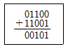
- 덧셈
- 뺄셈
- 곱셈
- 나눗셈
(정답률: 81%)
8. 인덕터의 특징을 요약한 것 종 잘못된 것은?
- 인덕터는 에너지를 축적하지만 소모하지는 않는다.
- 인덕터의 전류가 불연속적으로 급격히 변화하면 전압이 무한대가 되어야 하므로 인덕터 전류가 불연속적으로 변할 수 없다.
- 일정한 전류가 흐를 때 전압은 무한대이지만 일정량의 에너지가 축적된다.
- 인덕터는 직류에 대해서 단락 회로로 작용한다.
(정답률: 58%)
9. 그림에서 1차 코일의 자기인덕턴스는 L1, 2차 코일의 자기인덕턴스는 L2, 상호 인덕턴스를 M 이라 할 때 LA의 값으로 옳은 것은?
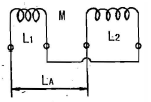
- L1+L2+2M
- L1-L2+2M
- L1+L2-2M
- L1-L2-2M
(정답률: 84%)
10. 빌딩의 부하 설비용량이 2000[KW], 부하역률 90[%], 수용률이 75[%] 일 때 수전설비의 용량은 약 몇 [KVA]인가?
- 1554[KVA]
- 1667[KVA]
- 1800[KVA]
- 2222[KVA]
(정답률: 77%)
11. 경간이 100미터인 저압 보안공사에 있어서 지지물의 종류가 아닌 것은?
- 철탑
- A종 철근 콘크리트주
- A종 철주
- 목주
(정답률: 85%)
12. 그림과 같은 회로의 기능은?
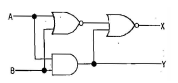
- 반가산기
- 감산기
- 반일치회로
- 부호기
(정답률: 84%)
13. 배전반 또는 분전반의 배관을 변경하거나 이미 설치된 캐비닛에 구멍을 뚫을 때 사용하며 수동식과 유압식이 있다. 이 공구는 무엇인가?
- 클리퍼
- 클릭볼
- 커터
- 녹아웃 펀치
(정답률: 90%)
14. 금속관공사 시 관의 두께는 콘크리트에 매설하는 경우 몇 [㎜]이상 되어야 하는가?
- 0.6
- 0.8
- 1.2
- 1.4
(정답률: 92%)
15. R=10[Ω], XL=8[Ω], Xc=20[Ω]이 병렬로 접속된 회로에 80[V]의 교류전압을 가하면 전원에 흐르는 전류는 몇 [A]인가?
- 5[A]
- 10[A]
- 15[A]
- 20[A]
(정답률: 63%)
16. 3상 배전선로의 말단에 늦은 역률 60[%], 120[kW]의 평형 3상 부하가 있다. 부하점에 부하와 병렬로 전력용 콘덴서를 접속하여 선로손실을 최소화 하려고 한다. 이 경우 필요한 콘덴서의 용량은? (단, 부하단 전압은 변하지 않는 것으로 한다.)
- 60[kVA]
- 80[kVA]
- 135[kVA]
- 160[kVA]
(정답률: 55%)
17. 최대사용전압 3300[V]인 고압 전동기가 있다. 이 전동기의 절연내력 시험전압은 몇 [V]인가?
- 3630[V]
- 4125[V]
- 4950[V]
- 1⑤00[V]
(정답률: 77%)
18. 여자기(Exciter)에 대한 설명으로 옳은 것은?
- 발전기의 속도를 일정하게 하는 것이다.
- 부하 변동을 방지하는 것이다.
- 직류 전류를 공급하는 것이다.
- 주파수를 조정하는 것이다.
(정답률: 80%)
19. 변압기의 전일효율을 최대로 하기 위한 조건은?
- 전부하시간이 길수록 철손을 작게 한다.
- 전부하시간이 짧을수록 무부하손을 작게 한다.
- 전부하시간이 짧을수록 철손을 크게 한다.
- 부하시간에 관계없이 전부하 동손과 철손을 같게 한다.
(정답률: 51%)
20. 변압기의 시험 중에서 철손을 구하는 시험은?
- 극성시험
- 단락시험
- 무부하시험
- 부하시험
(정답률: 85%)
2과목: 임의구분
21. 우선순위 인터럽트 처리 방법 중 소프트웨어에 의한 방법은?
- 폴링 방법(polling method)
- 스트로브 방법(strobe method)
- 데이지-체인 방법(daisy-chain method)
- 우선순위 인코더 방법(priority encoder method)
(정답률: 54%)
22. 방향 계전기의 기능이 적합하게 설명이 된 것은 어느 것인가?
- 예정된 시간지연을 가지고 응동(應動)하는 것을 목적으로 한 계전기
- 계전기가 설치된 위치에서 보는 전기적 거리등을 판별해서 동작
- 보호구간으로 유입하는 전류와 보호구간에서 유출되는 전류와의 벡터차와 출입하는 전류와의 관계비로 동작하는 계전기
- 2개 이상의 벡터량 관계위치에서 동작하며 전류가 어느 방향으로 흐르는가를 판정하는 것을 목적으로 하는 계전기
(정답률: 81%)
23. 극수 16, 회전수 450[rpm], 1상의 코일수 83, 1극의 유효 자속 0.3[Wb]의 3상 동기발전기가 있다. 권선계수가 0.96이고, 전기자 권선을 성형결선으로 하면 무부하 단자 전압은 약 몇 [V]인가?
- 8000[V]
- 9000[V]
- 10000[V]
- 11000[V]
(정답률: 60%)
24. 그림과 같은 회로에서 단자 a, b에서 본 합성저항[Ω]은?
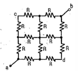
- 1/2R
- 1/3R
- 3/2R
- 2R
(정답률: 91%)
25. 100[V]용 30[W]의 전구와 60[W]의 전구가 있다. 이것을 직렬로 접속하여 100[V]의 전압을 인가하였을 때 두전구의 상태는 어떠한가?
- 30[W]의 전구가 더 밝다.
- 60[W]의 전구가 더 밝다.
- 두 전구의 밝기가 모두 같다.
- 두 전구 모두 켜지지 않는다.
(정답률: 89%)
26. 다음 중 저항 부하시 맥동률이 가장 적은 정류방식은?
- 단상 반파식
- 단상 전파식
- 3상 반파식
- 3상 전파식
(정답률: 86%)
27. 유도 전동기의 1차 접속을 △에서 Y결선으로 바꾸면기동시의 1차 전류는?
- 1/3로 감소한다.
- 1/√3로 감소한다.
- 3배로 증가한다.
- √3배로 증가한다.
(정답률: 82%)
28. 다음 논리함수를 간략화 하면 어떻게 되는가?
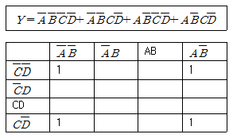
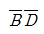
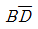
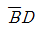
- BD
(정답률: 74%)
29. 어떠한 RLC 병렬회로가 병렬공진 되었을 때 합성전류에 대한 설명으로 옳은 것은?
- 전류는 무한대가 된다.
- 전류는 최대가 된다.
- 전류는 흐르지 않는다.
- 전류는 최소가 된다.
(정답률: 76%)
30. 반사 갓을 사용하여 90~100[%]정도의 빛이 아래로 하고, 10[%] 정도가 위로 향하는 방식으로 빛의 손실이 적고, 효율은 높지만, 천장이 어두워지고 강한 그늘이 생기며 눈부심이 생기기 쉬운 조명방식은?
- 직접조명
- 반직접조명
- 전반 확산 조명
- 반간접조명
(정답률: 80%)
31. MOS-FET의 드레인 전류는 무엇으로 제어하는가?
- 게이트 전압
- 게이트 전류
- 소스 전류
- 소스 전압
(정답률: 77%)
32. 화약류 등의 제조소 내에 전기설비를 시공할 때 준수 할 사항이 아닌 것은?
- 전열기구 이외의 전기기계기구는 전폐형으로 할 것
- 배선은 두께 1.6[㎜] 합성수지관에 넣어 손상 우려가 없도록 시설할 것
- 전열기구는 시스선 등의 충전부가 노출되지 않는 발열체를 사용할 것
- 온도가 현저히 상승 또는 위험발생 우려가 있는 경우 전로를 자동 차단하는 장치를 갖출 것
(정답률: 75%)
33. SCR에 대한 설명으로 옳지 않은 것은?
- 대전류 제어 정류용으로 이용된다.
- 게이트전류로 통전전압을 가변시킨다.
- 주전류를 차단하려면 게이트전압을 영 또는 부(-)로 해야 한다.
- 게이트전류의 위상각으로 통전전류의 평균값을 제어시킬 수 있다.
(정답률: 72%)
34. 지중 전선로는 케이블을 사용하고 직접 매설식의 경우 매설 깊이는 차량 및 기타 중량물의 압력을 받는 곳에서는 지하 몇 [m] 이상이어야 하는가?(2021년 변경된 KEC 규정 적용됨)
- 0.6
- 0.8
- 1.0
- 1.2
(정답률: 80%)
35. 어셈블리어 문장의 구성요소 중 인스트럭션이 차지하는 기억장소를 나타내며, 필요에 따라 생략할 수 있는 요소는?
- 레이블(Label)
- 동작이론
- 주소나 자료이름
- 설명
(정답률: 44%)
36. 저압 연접인입선은 인입선에서 분기하는 점으로부터 100[m]를 넘지 않는 지역에 시설하고 폭 몇 [m]를 초과하는 도로를 횡단하지 않아야 하는가?
- 4
- 5
- 6
- 6.5
(정답률: 85%)
37. 유도전동기의 2차 입력, 2차 동손 및 슬립을 각각 P2, PC2, s라 하면 이들의 관계식은?
- s=P2×PC2
- s=P2+PC2
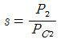
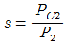
(정답률: 79%)
38. 다음 중 전기 신호를 사용하여 지울 수 있는 ROM은?
- PROM
- EEPROM
- EPROM
- Mask ROM
(정답률: 47%)
39. 직류 직권전동기에서 토크 T와 회전수 N과의 관계는 어떻게 되는가?
- T∝ N
- T∝ N2
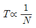
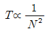
(정답률: 70%)
40. 직류기에서 파권 권선의 이점은?
- 효율이 좋다.
- 출력이 크다.
- 전압이 높게 된다.
- 역률이 안정된다.
(정답률: 45%)
3과목: 임의구분
41. 3상 변압기 결선 조합 중 병렬운전이 불가능한 것은?
- △-△ 와 △-△
- △-Y 와 Y-△
- Y-Y 와 △-Y
- △-△ 와 Y-Y
(정답률: 90%)
42. 트라이액에 대한 설명 중 틀린 것은?
- 3단자 소자이다.
- 항상 정(+)의 게이트 펄스를 이용한다.
- 두 개의 SCR을 역병렬로 연결한 것이다.
- 게이트를 갖는 대칭형 스위치이다.
(정답률: 68%)
43. 기계기구의 철대 및 외함 접지에서 옳지 못한 것은?
- 400[V] 미만인 저압용에서는 제3종 접지공사
- 400[V] 이상의 저압용에서는 제2종 접지공사
- 고압용에서는 제1종 접지공사
- 특별 고압용에서는 제1종 접지공사
(정답률: 77%)
44. 회전수 1800[rpm]을 만족하는 동기기의 극수(㉠)와 (㉡)는?
- ㉠ 4극, ㉡ 50[㎐]
- ㉠ 6극, ㉡ 50[㎐]
- ㉠ 4극, ㉡ 60[㎐]
- ㉠ 6극, ㉡ 60[㎐]
(정답률: 83%)
45. 공기 중에서 어느 일정한 거리를 두고 있는 두 점전하 사이에 작용하는 힘이 16[N]이었는데, 두 전하 사이에 유리를 채웠더니 작용하는 힘이 4[N]으로 감소하였다. 이 유리의 비유전율은?
- 2
- 4
- 8
- 12
(정답률: 83%)
46. 다음 중 변압기의 누설리액턴스를 줄이는 데 가장 효과적인 방법은?
- 권선을 분할하여 조립한다.
- 코일의 단면적을 크게 한다.
- 권선을 동심 배치시킨다.
- 철심의 단면적을 크게 한다.
(정답률: 81%)
47. 사이리스터의 유지전류 (holding current)에 관한 설명으로 옳은 것은?
- 사이리스터가 턴온(turn on) 하기 시작하는 순전류
- 게이트를 개방한 상태에서 사이리스터가 도통 상태를 유지하기 위한 최소의 순전류
- 사이리스터의 게이트를 개방한 상태에서 전압을 상승하면 급히 증가하게 되는 순전류
- 게이트 전압을 인가한 후에 급히 제거한 상태에서 도통 상태가 유지되는 최소의 순전류
(정답률: 71%)
48. 64가지의 명령어를 나타내려고 하면 최소한 몇 개의 비트(bit)가 필요한가?
- 4
- 6
- 8
- 12
(정답률: 48%)
49. 그림과 같은 유접점 회로가 의미하는 논리식은?
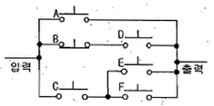
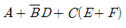
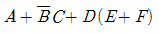
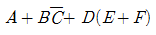
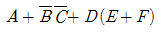
(정답률: 78%)
50. 16진수 D28A를 2진수로 옳게 나타낸 것은?
- 1101001010001010
- 0101000101001011
- 1101011010011010
- 1111011000000110
(정답률: 71%)
51. 버스덕트 배선에 의하여 시설하는 도체의 단면적은 알루미늄 띠 모양인 경우 얼마 이상의 것을 사용하여야 하는가?
- 20[mm2]
- 25[mm2]
- 30[mm2]
- 40[mm2]
(정답률: 64%)
52. 부하를 일정하게 유지하고 역률 1로 운전 중인 동기전 동기의 계자전류를 증가시키면?
- 아무 변동이 없다.
- 리액터로 작용한다.
- 뒤진 역률의 전기자 전류가 증가한다.
- 앞선 역률의 전기자 전류가 증가한다.
(정답률: 54%)
53. 상전압 300[V]의 3상 반파 정류회로의 직류 전압은 몇 [V]인가?
- 117[V]
- 200[V]
- 283[V]
- 351[V]
(정답률: 70%)
54. 정현파에서 파고율이란?
- 최대값/실효값
- 실효값/평균값
- 평균값/실효값
- 평균값/최대값
(정답률: 81%)
55. 다음 중 모집단의 중심적 경향을 나타낸 측도에 해당 하는 것은?
- 범위(Range)
- 최빈값(Mode)
- 분산(Variance)
- 변동계수(Coefficient of variation)
(정답률: 81%)
56. 다음과 같은 [데이터]에서 5개월 이동평균법에 의하여 8월의 수요를 예측한 값은 얼마인가?
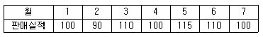
- 103
- 1⑤
- 107
- 109
(정답률: 75%)
57. 로트에서 랜덤하게 시료를 추출하여 검사한 후 그 결과에 따라 로트의 합격, 불합격을 판정하는 검사방법을 무엇이라 하는가?
- 자주검사
- 간접검사
- 전수검사
- 샘플링검사
(정답률: 90%)
58. 관리 사이클의 순서를 가장 적절하게 표시한 것은? (단, A는 조치(Act), C는 체크(Check), D는 실시(Do), P는 계획(Plan)이다.)
- P → D → C → A
- A → D → C → P
- P → A → C → D
- P → C → A → D
(정답률: 84%)
59. 여유시간이 5분, 정미시간이 40분일 경우 내경법으로 여유율을 구하면 약 몇 [%]인가?
- 6.33[%]
- 9.⑤[%]
- 11.11[%]
- 12.50[%]
(정답률: 67%)
60. 다음 중 계량값 관리도만으로 짝지어진 것은?
- c 관리도, u 관리도
- x- Rs 관리도, P 관리도
 관리도, nP 관리도
관리도, nP 관리도- Me-R 관리도,
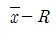
관리도
(정답률: 63%)